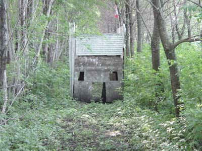

A two-story bunker is a welcome addition to any field. We got ours in the fall of 2003. Daniel and his friend worked on it after school for three days. On its first day of use everybody wanted to get into it. Whenever somebody got into it everyone on the opposing team would focus on that person, trapping him inside. Hence the name.
The Alamo is the location of the center flag:
